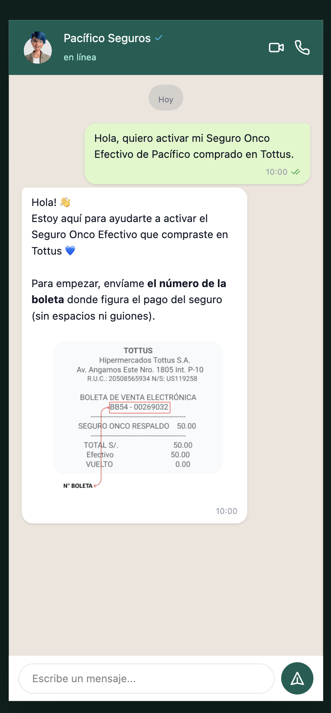
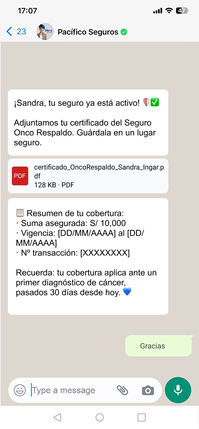

El problema
Onco Efectivo es un seguro oncológico embebido que se vende en góndola dentro de las tiendas Tottus, por S/50 en pago único. El cliente lo compra en caja, escanea un código QR en la tarjeta de góndola, y activa la póliza a través de una conversación de WhatsApp con Vera, el bot de Pacífico Seguros. La validación interna ocurre al día siguiente a las 5:00 a.m., y el resultado se comunica por WhatsApp y correo.
El reto no era solo construir una interfaz: era diseñar una conversación completa — con sus reglas de negocio, validaciones legales y casos de error — que funcionara dentro de las restricciones de un canal de mensajería, y que se sintiera cálida y clara incluso cuando el mensaje era un rechazo.
Diseño end-to-end del flujo conversacional, con IA como método de producción
Cubrí arquitectura, copy, prototipado y research. A diferencia de mis otros casos, acá el proceso de diseño fue deliberadamente AI-assisted: usé Claude para arquitectura del flujo, copy, generación de prompts y construcción del prototipo interactivo, y Figma Make para el user flow y el prototipo visual — documentando el método de producción, no solo el resultado.
Una conversación con reglas de negocio, no un formulario con burbujas
Mapeé el journey en tres fases — registro, consentimientos y validación — y construí el user flow completo en Figma, con copy en cada nodo, casuísticas de error y timeout incluidos.
Flujo condensado — versión completa con reintentos y timeout en Figma
- QR reactivo, no proactivo — el cliente inicia la conversación, no el bot.
- Tipo de documento antes del número — valida el formato correcto (DNI o CE).
- Declaración jurada como pregunta directa — evita ambigüedad de Sí/No en negativo.
- Tercera persona para el asegurado — el comprador no siempre es quien se asegura.
- Transferencia si no califica — evita perder la venta por un desajuste no contemplado.

Trigger reactivo — Vera responde solicitando el N° de boleta

Cierre exitoso — certificado y cobertura en el mismo mensaje
Diseñar dentro de un canal sin UI propia
WhatsApp resuelve todo en texto, botones binarios y el orden de la conversación — sin layout ni componentes propios. Cada decisión de jerarquía se jugaba en la secuencia y el copy, dentro de reglas de negocio no negociables (rango de edad, redacción legal, plazos de devolución).
UMUX 90/100 — 15 puntos sobre el umbral mínimo
Research de usabilidad presencial con 5–6 participantes mixtos, escala UMUX adaptada al contexto conversacional, umbral mínimo de 75 puntos definido antes del lanzamiento.
El resultado: UMUX 90/100 — validando la claridad y usabilidad del flujo antes de su paso a producción.
Así se ve funcionando — prototipo construido con Figma Make